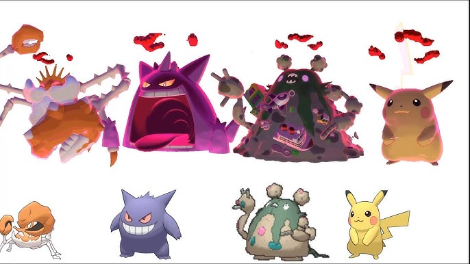
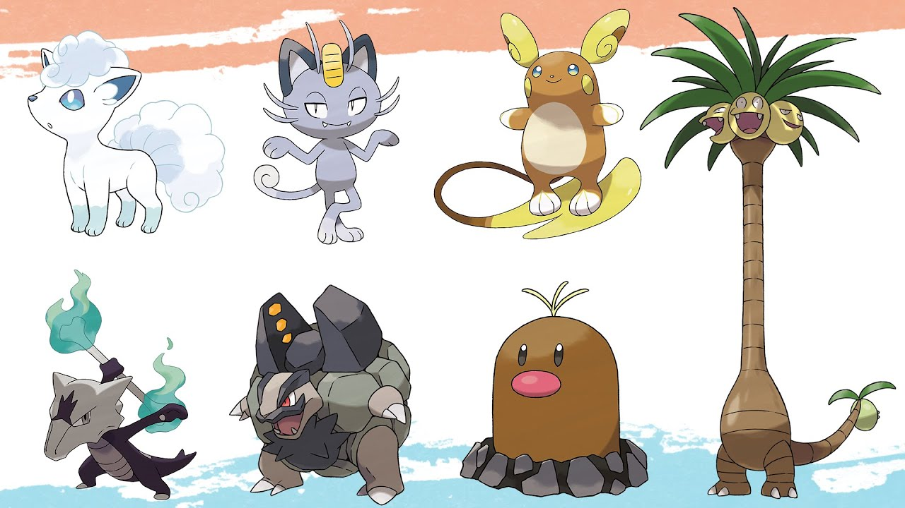
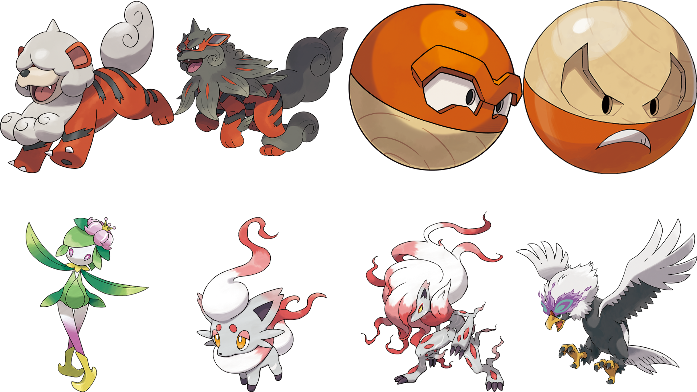

Mega Evolution is a special transformation that temporarily makes a Pokémon stronger during battle. It changes the Pokémon’s appearance and boosts its abilities, but it only lasts for the duration of that fight. This feature was introduced in Generation 6 and represents a strong bond between a trainer and their Pokémon.

Gigantamax is a transformation where certain Pokémon grow to an enormous size and take on a new appearance. While in this form, they gain powerful, unique moves that can turn the tide of a battle. Unlike regular size changes, only specific Pokémon can Gigantamax, and it was introduced in Generation 8.

Alolan forms are alternate versions of familiar Pokémon that adapted to a different environment. In the tropical Alola region (Generation 7), some Pokémon changed their appearance, abilities, and even their elemental types to better survive. These forms show how Pokémon can evolve differently depending on where they live.

Hisuian forms are ancient versions of Pokémon from the Hisui region (Generatiom 8), which represents an earlier time in the Pokémon world. These Pokémon look and behave differently from their modern counterparts, offering a glimpse into how they may have existed in the past.